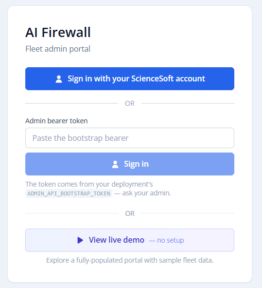
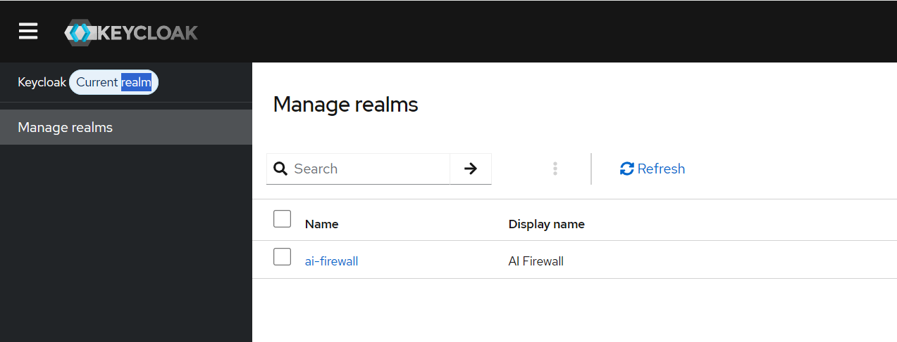
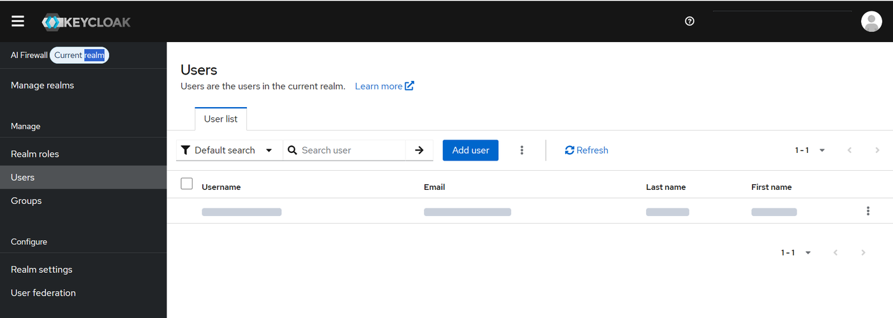
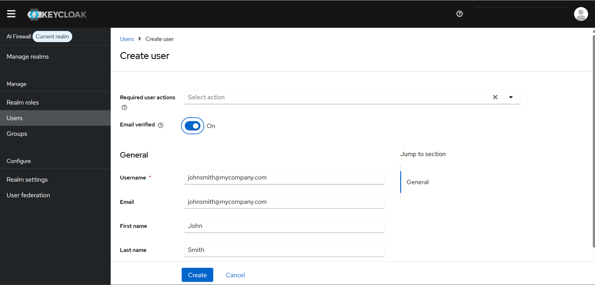
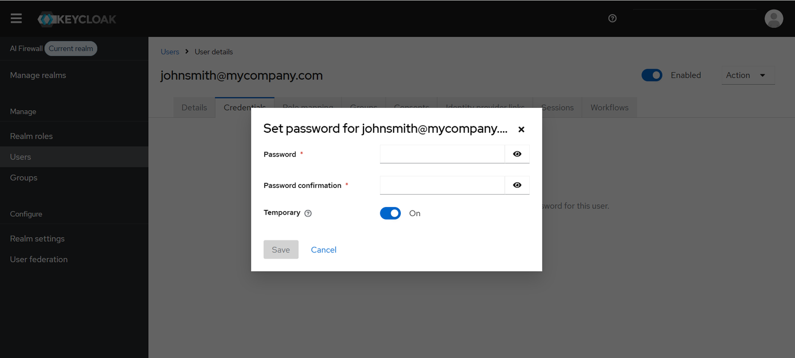
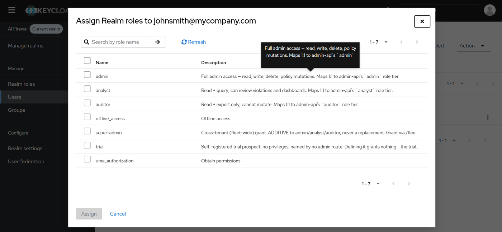
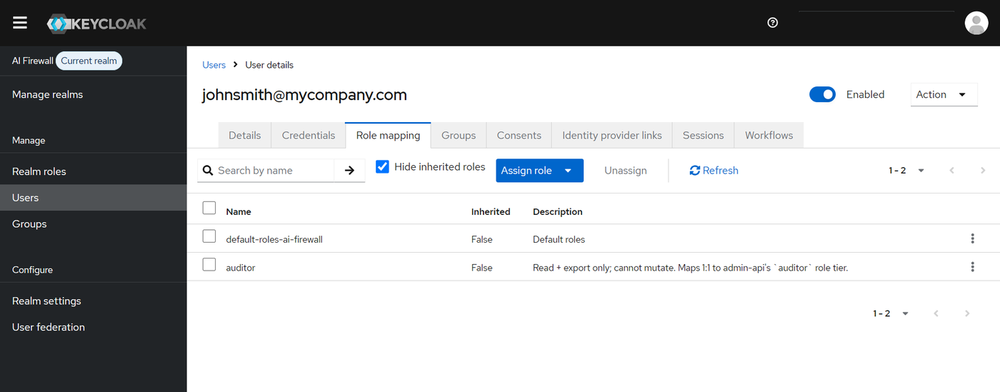
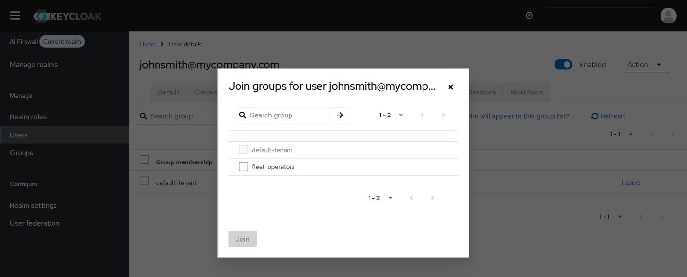

Sign-in and roles¶
This page explains who can sign in to ScienceSoft On-Device AI Firewall, what each role can do, and how to add people.
How people and devices are identified¶
ScienceSoft On-Device AI Firewall uses Keycloak as its sign-in service. Keycloak runs as one of the containers of the server. It handles sign-in to the admin portal, roles and the sign-in log. It has two realms (separate sets of accounts):
| Realm | What it is for |
|---|---|
ai-firewall |
Sign-in to the admin portal. The role of a person decides what they can do. Their workspace group decides which workspace they see. |
master |
Sign-in to the Keycloak console, for the administrators who manage people and roles. |
| What | How it is identified |
|---|---|
| People who use the admin portal | Keycloak, realm ai-firewall |
| Keycloak administrators | Keycloak, realm master. One personal account for each administrator |
| Computers (agents) | Not through Keycloak. At first start the agent exchanges the device enrolment key for its own device key. |
| Static tokens (the emergency sign-in token and the administration tokens) | Not through Keycloak. They always have the highest rights and are not recorded in the sign-in log. Keep them for emergencies only. |
First sign-in¶
-
Open
https://<your-address>/admin.
The button View live demo opens a sample portal with invented data. It does not connect to your server.
-
Select the single sign-on button. Sign in with the administrator email that you gave to setup and the temporary password from
credentials.txt. - You are asked to choose a new password, and to register an authenticator app for one-time codes.
If you set authMode to compat (the recommended value), the sign-in page also has an emergency token field. Use it only in an emergency, and keep the token in your password manager. With keycloak, the page has the single sign-on button only.
Roles¶
Every person who uses the admin portal has one base role. The server checks the role on every request, not only in the screens.
| Role | What it allows | Who gets it |
|---|---|---|
admin |
Everything in their own workspace | IT or security administrators who set up and run protection |
analyst |
Reading and investigating in their own workspace, without changes | Analysts who review detections but must not change settings |
auditor |
Audit only: reading and export | Auditors and compliance staff |
super-admin |
Added on top of a base role. All workspaces, creating workspaces, releases, platform audit and the sign-in log | People who run the whole installation. Given only through the fleet-operators group |
On a server that belongs to one organisation, the people who run the whole installation need super-admin. Only they can create workspaces, see all workspaces, and use the platform audit log, the releases view and the other all-workspace views. Setup gives super-admin to the first administrator. Give it to others only by adding them to the fleet-operators group, and only to people you trust with every workspace. Everyone else needs one base role and one workspace group. The emergency token always has this level.
A role is not enough. A person also needs a workspace group. Without it the portal shows no workspace.
The default role¶
Give new portal users the auditor role. It has the fewest rights, so a person who gets it by mistake cannot change anything. Give analyst or admin only when the work needs it.
- Do not add the product roles to the default roles of the
ai-firewallrealm. If you do, every new person, including people who sign in through a company directory, gets access automatically. - Never give
super-adminby default, and never makefleet-operatorsa default group.
Two accounts for an administrator¶
The Keycloak console and the admin portal use different realms, so an administrator who needs both has two accounts with the same username and separate passwords. Changing the password of one does not change the other. An account from the master realm cannot sign in to the admin portal. A person who needs the portal needs an account in the ai-firewall realm.
Use the built-in emergency administrator account only in an emergency, for example to create the first additional administrator. For regular work, create a personal administrator account for each person. Do not share one account.
Open the Keycloak console¶
The console is never on the public address. Those addresses always answer "not found". You open it from your own computer through an SSH tunnel.
-
In
credentials.txt, find the console account and the tunnel command. The command looks like this:ssh -N -L 18080:127.0.0.1:8080 <user>@<server>Keep it running.
-
Open
http://127.0.0.1:18080/keycloak/admin/in your browser. Use exactly that address, with127.0.0.1, notlocalhost. - Sign in with your
masterrealm account. A one-time code from an authenticator app is required. The first time, you register the app. Every later sign-in asks for the code. - Close the tunnel when you finish.
The tunnel command is the same on every server installed with aifw: port 8080 is on the server, and 18080 is on your own computer. If the console does not load after an upgrade from an older version, run sudo aifw setup once.
Add a person to the admin portal¶
In the Keycloak console:
-
Switch the realm (top left) from
mastertoai-firewall. A person created inmastercannot sign in to the portal.
-
Open Users, then Add user. Fill in the username, email and name. Turn on Email verified only if you have confirmed the address. Select Create.


-
On the Credentials tab, select Set password. Enter a strong password and keep Temporary on, so the person must change it at the first sign-in.

-
On the Role mapping tab, select Assign role, filter by realm roles, and choose one base role (
admin,analystorauditor).

-
On the Groups tab, select Join group and choose the workspace group.

The realm adds every new person to its default workspace group,
default-tenant, as the screenshot shows. Check that this is the group of your workspace. If it is not, leave it and join the right group. Never joinfleet-operatorsfor a person who should see one workspace only (see below).
Deliver the password in a safe way:
- Never send it in plain text by email, chat or in a ticket.
- Send the username and the password through different channels, or use a password-sharing tool with a one-time link.
- Ask the person to change the temporary password and to confirm when it is done.
super-admin is not given directly. Add the person to the fleet-operators group. To check, open Role mapping and turn off Hide inherited roles. A person with all-workspace access must show the base role and the inherited super-admin role. A person with one workspace must not show super-admin.
The same from the command line¶
On the server, kcadm.sh runs inside the Keycloak container, so no tunnel is needed:
KC="sudo docker exec -it ai-firewall-keycloak /opt/keycloak/bin/kcadm.sh"
$KC config credentials --server http://localhost:8080/keycloak --realm master --user <your-admin-username>
$KC create users -r ai-firewall -s username=<email> -s email=<email> -s enabled=true
$KC set-password -r ai-firewall --username <email> --new-password '<temporary-password>' --temporary
$KC add-roles -r ai-firewall --uusername <email> --rolename admin
Then add the person to the workspace group in the console.
Add a Keycloak administrator¶
- In the console, make sure the realm is
master. - Open Users, then Add user, and set a temporary password as above.
-
Give the access that fits:
Scope Who needs it What to give The ai-firewallrealm onlyAn administrator who manages portal people, roles and groups Join the group aifw-realm-operatorsAll realms, including masterAn administrator who replaces the emergency account for regular work The realm role adminof themasterrealm
For everyday work with portal people, the first scope is enough. Never create administrator accounts for the people who only use the portal.
Connect your company's directory¶
You can let people sign in with their company account, for example Microsoft Entra ID. See Single sign-on with your company directory.
Required realm settings¶
Setup imports the ai-firewall realm when Keycloak starts for the first time. The realm has no people in it. These settings are required for the product to work. Do not change them.
| Area | Setting | Required |
|---|---|---|
| Roles | admin, analyst, auditor, super-admin |
One base role for each person. super-admin is extra. A fifth role, trial, is used only on trial servers |
| Groups | fleet-operators |
Gives super-admin. Never a default group |
| Groups | Workspace groups | Each has a tenant attribute. Every person must be in one |
| Client | admin-portal-spa |
A public client with PKCE S256. Direct access grants off. No client secret |
| Client | admin-api |
Bearer-only. No client secret |
| Client | admin-cli |
Do not change |
| Login | User registration | Off |
A running server does not read the realm file again. The realm also sets a minimum password length of 12, a lockout after 5 failed sign-ins and a one-time-code policy for the administrator. aifw setup applies the same rules to servers that were set up earlier. Do not weaken them.